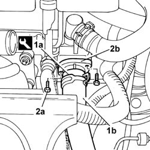

1088C40 THERMOSTAT- R + R
- Path
- Procedures > 10 ENGINE > 1088 ENGINE COOLING > 1088C WATER PUMP AND THERMOSTAT > 1088C40 THERMOSTAT- R + R
- Kind
- repair procedure (removal / refitting; the operation number is the code)
- Applies to
- engines: 2.0 16v; all production periods
- Interactive page
- https://sloeber94.github.io/elrnDB-fUlss/en/#/179007186
Applies to: engines: 2.0 16v; all production periods
 Removing
Removing
 Refitting
RefittingOp. 5010B08 VENTILATION SYSTEM OUTSIDE AIR PURIFYING FILTER (ANTIPOLLEN) - R+R
Op. 1048A39 SLEEVE FROM AIR CLEANER TO RIGID PIPE - R R
See in Op. 1048A10
1. Remove the band (1a) using the tool and release the coolant oulet hose from the thermostat (1b).
 | Description | Code | Function |
|---|---|---|---|
. | Caliper | 1.881.138.000 | Removing bands |
2. Undo retaining bolts (2a) and remove thermostat (2b).

Applies to: engines: 2.0 16v; all production periods
Refitting
Removing- Fit the thermostat and tighten the fixing bolts.
- Fit the hose removed previously and renew the fastening using the tool.
| Description | Code | Function |
|---|---|---|---|
. | Caliper | 1.881.138.000 | Removing bands |
See in Op. 1048A10
Op. 1048A39 SLEEVE FROM AIR CLEANER TO RIGID PIPE - R R
Op. 5010B08 VENTILATION SYSTEM OUTSIDE AIR PURIFYING FILTER (ANTIPOLLEN) - R+R